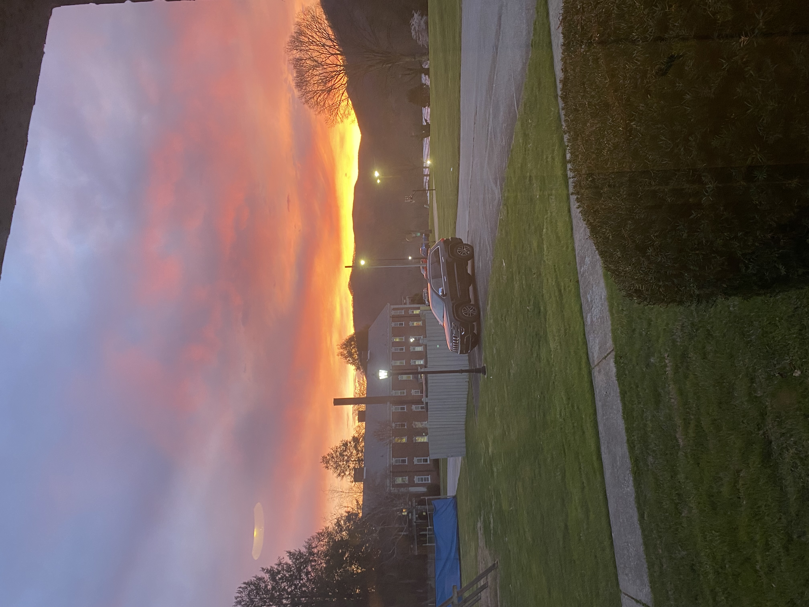

Photos


Tech Enthusiast | Aspiring Software Engineer
Hey, I am Mmesoma Onwusika. I am from
I did my last two years of high school in the northeast of Georgia and graduated from high school there.
Currently, I am a student at
I have strong interests in business so I am also getting two minors in
I started coding in fifth grade with a basic HTML page.
Afterwards, I fully got into programming and started learning Python in school. I spent a while learning python making mini projects.
While in high school in the USA. I learnt Java and took both AP Computer Science Principles and AP Computer Science A.
In the summer before my senior year of high school I did the Kode WIth Klossy Web Development camp and gained a good grasp on HTML, CSS, and JavaScript.
Now I have learned C, C++ and Racket.
